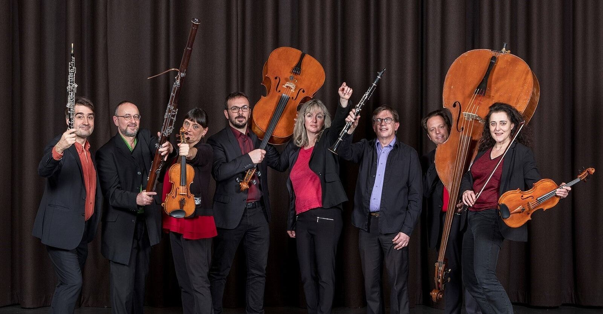

Galerie
Tetraktys en images
Scènes de concert, églises de village, affiches : feuilletez l’album, classé par événement.
Album
Photos et affiches
Photographies et affiches reprises du site officiel de l’ensemble. Crédits et droits à image à vérifier avec l’association avant diffusion.